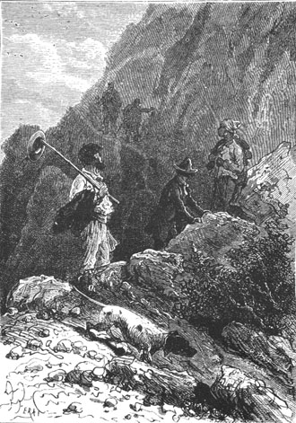
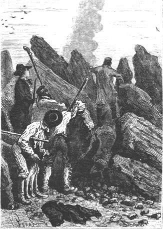
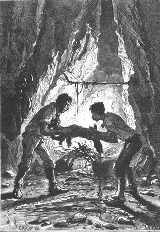

The colonists of Lincoln Island cast one last glance around them, they went around the crater by its narrow ridge and a half hour later they had climbed down to the first plateau to their night camp.
Pencroff thought that it was mealtime and for this purpose he raised the question of adjusting the two watches belonging to Cyrus Smith and the reporter.
We know that Gideon Spilett’s watch had been respected by the sea water since the reporter had been thrown on the beach from the first, out of the reach of the waves. It was an instrument kept in excellent condition, a real pocket chronometer which Gideon Spilett had never forgotten to wind carefully each day.
As to the engineer’s watch, it had necessarily stopped during the time that Cyrus Smith had passed on the dunes.
The engineer reset it, estimating approximately from the height of the sun that it was about nine o’clock in the morning. He set his watch to this hour.
Gideon Spilett was about to imitate him when the engineer held him back saying:
“No, my dear Spilett, wait. You have kept the time of Richmond, haven’t you?”
“Yes, Cyrus.”
“Consequently your watch is set to the meridian of that city, a meridian which is very nearly that of Washington?”
“No doubt.”
“Very well, then keep the setting. Remain content to wind it carefully but do not touch the hands. This will be useful to us.”
“What good will that be?” thought the sailor.
They ate so well that the supply of game and almonds was completely exhausted. But Pencroff was not uneasy. They would reprovision en route. Top, whose portion was very meager, would well know how to find some new game under the cover of the brushwood. Later the sailor intended to ask the engineer in all innocence to make powder and one or two hunting guns and he thought that this would present no difficulty.
On leaving the plateau Cyrus Smith proposed to his companions that they take a new road to return to the Chimneys. He wanted to explore Lake Grant which was so magnificently surrounded by a border of trees. They followed the crest of one of the buttresses where the creek 1 that fed the lake probably found its source. While chatting, the colonists were already using the proper names that they had chosen and this singularly facilitated the exchange of ideas. Herbert and Pencroff—the one young and the other like a small child—were enchanted and while walking the sailor said:
“Hey, Herbert, how things are coming along! We can’t possibly get lost, my boy, since whether we follow the road to Lake Grant or we rejoin the Mercy by crossing the woods of the Far West we will necessarily arrive at Grand View Plateau and consequently at Union Bay.”
It had been agreed that, without forming a compact group, the colonists would not wander far from each other. Very certainly some dangerous animals inhabited the thick forests of the island and it would be prudent to be on their guard. As a rule, Pencroff, Herbert and Neb went on ahead, preceded by Top who nuzzled into the slightest corner. The reporter and the engineer went together. Gideon Spilett was ready to record every incident. The engineer was silent most of the time, wandering from the road only to pick up sometimes one, sometimes another mineral or vegetable substance which he put in his pocket without making any comment.

Pencroff went on ahead, preceded by Top.
“What the devil can he be picking up?” murmured Pencroff. “I have looked carefully and I don’t see anything worth bending over for.”
About ten o’clock the small troop descended the last slopes of Mount Franklin. The soil was still scattered with only bushes and some sparse trees. They walked on yellowish calcinated ground forming a plain about a mile long which preceded the border of the woods. Some large sections of basalt which, according to Bischof, require three hundred fifty million years to cool, were strewn on the plain, very broken up in places. However there were no traces of lava which had especially poured out on the northern slopes.
Cyrus Smith believed that he could reach the creek’s course without incident which, according to him, would unfold under the trees at the edge of the plain, when he came headlong into Herbert, while Neb and the sailor were hiding behind some rocks.
“What is it, my boy?” asked Gideon Spilett.
“A smoke,” replied Herbert. “We have seen a smoke rising among the rocks about a hundred feet from us.”
“Men in this area?” cried the reporter.
“Let us avoid showing ourselves before we know with whom we are dealing,” replied Cyrus Smith. “I especially fear the natives if there are any of them on this island, which I do not wish for. Where is Top?”
“Top is up in front.”
“And he does not bark?”
“No.”
“That’s strange. Nevertheless, let us try to recall him.”
In a few moments the engineer, Gideon Spilett and Herbert had rejoined their two companions and like them they hid behind some basalt debris.
From there they could clearly see a smoke with a characteristic yellow color twirling into the air.

From there they could see a smoke...
Top was recalled by a weak whistle from his master who, making a sign to his companions to wait for him, glided among the rocks.
The colonists were immobile, waiting for the result of this exploration with a certain anxiety when a call from Cyrus Smith made them run up. They soon rejoined him and were all at once struck by a disagreeable odor which impregnated the atmosphere.
This easily recognized odor had sufficed for the engineer to guess at the identity of this smoke which at first had caused the anxiety, not without reason.
“This fire,” he said, “or rather this smoke is due only to nature’s efforts. It is due to a sulphuric spring which will permit us to effectively treat our laryngites.”
“Good,” cried Pencroff. “What a pity that I don’t have a cold.”
The colonists went to the spot where the smoke escaped. There they saw a sulphuric salt spring pouring out rather abundantly among the rocks. The water gave off a vivid sulphuric acid odor after having absorbed the oxygen from the air.
Cyrus Smith dipped his hand into it, finding these waters oily to the touch. He tasted it and found it to be a little sweet. As to its temperature he estimated it to be at 95° Fahrenheit (35° Centigrade above zero). And Herbert having asked him on what he based this evaluation:
“Very simple, my child,” he said, “because on plunging my hand into this water I felt no sensation of either hot or cold. Thus, it is the same temperature as the human body which is about 95°.”
Since the sulphuric spring was of no actual benefit, the colonists went toward the thick border of the forest which grew a few hundred feet away.
There, as they had guessed, the brisk clear waters of the stream ran between the high banks of red ground whose color revealed the presence of iron oxide. This color immediately gave to this watercourse the name of Red Creek.
It was only a large brook, deep and clear, formed by the waters of the mountain which half stream, half torrent, flowed peacefully here on a sand bed, rumbling over the tops of the rocks on which they fell in a cascade. It flowed toward the lake a mile and a half away, over a width varying from thirty to forty feet. Its waters were sweet which led them to believe that so also were the waters of the lake. This would be a happy circumstance in the event they should find a dwelling on its border more agreeable than the Chimneys.
As to the trees which shaded the banks of the creek a hundred feet downstream, they appeared for the most part to be of a species which are abundant in the temperate zone of Australia and of Tasmania and not those of the conifers which grew on that part of the island already explored a few miles from Grand View Plateau. At this time of the year, at the beginning of the month of April, which corresponds to the month of October in the northern hemisphere, that is to say at the start of autumn, the foliage is not yet missing. This was especially so with the casuarinas and the eucalyptus some of which would furnish next spring a sweet manna perfectly analogous to the manna of the orient. Some clusters of Australian cedars also grew in the clearings which were covered with a tall grass called “tussock” in Australia. However, the coconut which is so abundant in the archipelagos of the Pacific seemed to be missing on the island whose latitude was doubtless too low.
“What a pity” said Herbert, “a tree which is so useful and which has such beautiful nuts.”
As to the birds, they swarmed among the somewhat lean branches of the eucalyptus and the casuarinas which did not hide their wing displays. Black, white or grey cockatoos, parrots and parakeets with a plumage tinged with all colors, “kings” with a bright green crowned with red, blue loris and “blue mountains” gave a sight like looking through a prism. They flew amid a deafening clatter.
All at once a strange concert of discordant voices resounded from the midst of a thicket. The colonists heard successively the singing of birds, the cries of quadrupeds and a sort of clapping which they would have believed escaped from the lips of a native. Neb and Herbert ran toward this bush forgetting the most elementary principles of prudence. Very fortunately there was no formidable beast there nor a dangerous native but very simply a half dozen of these mocking and singing birds which they recognized as “mountain pheasants.” A few strokes of the stick, skillfully applied, terminated this scene of mimicking and also procured excellent game for the evening meal.
Herbert also pointed out some magnificent pigeons with bronze colored wings, some topped by a superb crest, others draped in green like their congeners from Port Macquarie; but it was impossible to catch them any more than the crows and magpies which flew away in flocks. A firing of small shot would have produced a great slaughter among these birds, but the hunters were still limited to stones for missiles and to sticks for hand held weapons and these primitive devices could not be anything but very inadequate.
Their inadequacy was demonstrated more clearly again when a troop of hopping and bounding quadrupedes, making leaps of thirty feet, real flying mammals, ran away over the thicket so nimbly and at such a height that they seemed to pass from one tree to another like squirrels.
“Kangaroos!” shouted Herbert.
“And are they edible?” replied Pencroff.
“Stewed,” responded the reporter, “they compare to a better venison!...”
Gideon Spilett had not finished this exciting statement when the sailor, followed by Neb and Herbert, went after the kangaroos. Cyrus Smith called them back but in vain. But it was also in vain that the hunters ran after this springy game which bounced like a ball. After five minutes of running they were out of breath and the band disappeared in the brushwood. Top had had no more success than his masters.
“Mister Cyrus,” said Pencroff when they rejoined the engineer and the reporter, “Mister Cyrus, you can well see that it is indispensable to make some guns. Will that be possible?”
“Perhaps,” replied the engineer, “but we will first begin by making some bows and arrows and I do not doubt that you will become just as skilled in their use as the Australian hunters.”
“Arrows, bows!” said Pencroff with a condescending pout. “That’s very well for children!”
“Don’t be proud, friend Pencroff,” responded the reporter. “Bows and arrows sufficed for centuries to stain the earth with blood. Powder is only a thing of yesterday but war is as old as the human race unfortunately.”
“You must excuse me, Mister Spilett,” replied the sailor, “I always speak too quickly.”
Herbert however, engrossed in his favorite science of natural history, returned to the subject of the kangaroos by saying:
“Besides, we had an encounter there with a species that is most difficult to capture. They were giants with a long grey fur but if I am not mistaken there exist black and red kangaroos, rock kangaroos and rat kangaroos which are much easier to lay hands on. One can count a dozen species...”
“Herbert” replied the sailor dogmatically, “for me there is only one species of kangaroo, the ‘kangaroo-on-the-spit’, and that is precisely the one that we will not have this evening.”
They could not help laughing on hearing this new classification by Master Pencroff. The good sailor could not at all hide his regret at being reduced to a dinner of singing pheasants, but fortune would show itself once more to accommodate him.
Top in fact, took a strong interest in the hunt, nosing about everywhere with an instinct increased by a ferocious appetite. It was even likely that if some game came under his control nothing would be left to the hunters and that Top was then hunting for himself, but Neb did well to watch him.
About three o’clock the dog disappeared into the brushwood and some muffled growlings soon indicated that he was at grips with some animal.
Neb dashed forward and sure enough he found Top greedily devouring a quadrupede which, ten seconds later, would have been impossible to recognize in Top’s stomach. But very fortunately the dog fell upon a brood; he had killed three. Two other rodents—the animals in question appeared to be of this order—were lying strangled on the ground.
Neb reappeared triumphant holding one of these rodents in each hand whose size exceeded that of a hare. Their yellow fur was mixed with greenish spots and their tail existed only in a rudimentary state.
The citizens of the Union did not hesitate to give these rodents the name which befitted them. They were “maras,” a sort of agouti, a little larger than their congeners from the tropical countries, really American rabbits, with long ears and with five molars on each side of the jaws, which is the distinguishing characteristic of agoutis.
“Hurrah!” cried Pencroff. “The roast has arrived and now we can go home.”
The march, momentarily interrupted, was resumed. The clear water of Red Creek rambled on under a canopy of casuarinas, banksias and gigantic gum trees. Superb liliaceous plants grew to a height of twenty feet. Other species of trees, which were unknown to the young naturalist, inclined over the brook which they heard murmuring under these arches of foliage.
However the watercourse was becoming noticeably wider and Cyrus Smith was led to believe that it would soon reach its mouth. In fact, upon leaving a thick mass of beautiful trees it suddenly appeared.
The explorers had arrived on the western shore of Lake Grant. This area was worth looking at. This expanse of water with a circumference of about seven miles and with an area of two hundred fifty acres 2 was set within a border of various trees. Toward the east, across a screen of foliage picturesquely enhanced in some places, appeared the sparkling horizon of the sea. In the north, the lake traced a slightly concave curve which contrasted with the sharp outline of is lower point. Numerous aquatic birds frequented the banks of this small Ontario. The “Thousand Islands” of its American namesake were represented by a rock which emerged above the surface at several hundred feet from the southern bank. There, several couples of kingfishers lived together, perched on some stone, solemn, immobile, on the lookout for passing fish. Then rushing and plunging with a sharp cry, they reappeared with prey in their beak. Elsewhere on the banks and on the islet there strutted wild ducks, pelicans, waterfowl, redbeaks, philedons provided with a tongue in the form of a paintbrush, and one or two specimens of those splendid lyrebirds whose tail unfolds like the gracious motion of a harp.
As to the waters of the lake, they were sweet and clear. From certain bubblings in concentric circles which intersected at their surface they could not doubt but that it abounded in fish.
“This lake is truly beautiful,” said Gideon Spilett. “We could live on its shore.”
“We will live there!” replied Cyrus Smith.
The colonists, then wanting to return to the Chimneys by the shortest way, went toward the angle formed in the south by the junction of the banks of the lake. With some difficulty they cut a path through the thickets and brushwood on which the hand of man had never made its mark and so they went toward the shore, arriving at the north of Grand View Plateau. Two miles were crossed in this direction when, after a last screen of trees, the plateau appeared, covered with a thick turf, and beyond that, the infinite sea.
In order to return to the Chimneys it would have been sufficient to cross the plateau obliquely for a distance of a mile and to descend to the bend formed by the first detour of the Mercy. But the engineer wanted to find out how and where the overflow of water escaped from the lake and the exploration was prolonged under the trees for a mile and a half toward the north. In fact it was probable that an outlet existed which doubtless went through a cut in the granite. In sum, the lake was only an immense basin which was gradually replenished by the flow from the creek and it could well be that the overflow escaped to the sea by some falls. If such was the case, the engineer thought that it would perhaps be possible to utilize this fall and to make use of its force, actually lost without profit to anyone. They continued thus to follow the banks of Lake Grant along the plateau; but after going another mile in this direction Cyrus Smith had not been able to discover the outlet which must exist however.
It was then half past four. The preparations for dinner required that the colonists go back to their dwelling. The small troop then retraced its steps along the left bank of the Mercy and Cyrus Smith and his companions arrived at the Chimneys.
There the fire was lit and Neb and Pencroff, on whom naturally devolved the duties of chefs, the one by virtue of being a Negro, the other by virtue of being a sailor, skillfully prepared grilled agoutis to which they did justice.

Neb and Pencroff prepared grilled agoutis...
The meal completed, the time came for everyone to get ready for bed. Cyrus Smith took some small samples of different minerals from his pocket and contented himself with saying:
“My friends, here is iron ore, here is pyrites, here is clay, here is lime, and here is coal. This is what nature gives us as its contributions to our efforts. Tomorrow we will do our share.”